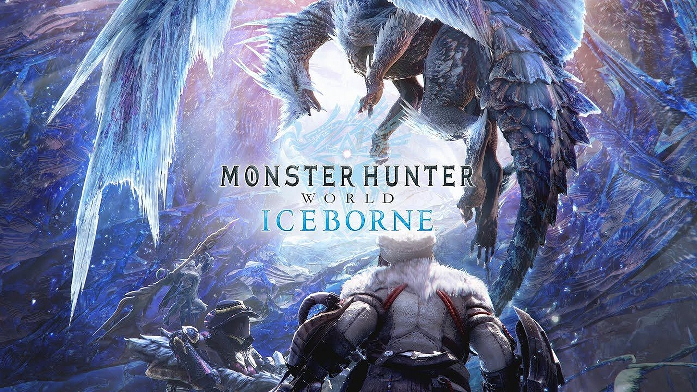

What Are the Best Dual Blades?
To me, is the best in the Dual Blade department would be the "Kadachi Claws". They are the most convenient, are easy to upgrade, and are very high damaging in the later parts of the game. These weapons can be obtained early in the game and require very little to upgrade to its full potential. This weapon set also carries the thunder element, an element that most monsters are moderately weak to,making you a threat in the field even before you obtain any late game items. The combination of availability and conveniency makes the "Kadachi Claws" the best set to use in the Dual Blades class. Behind the claws are dragon-based "Wrathful Predation, which can only be obtained in the later portions of the game, and the Beo Hatchets, which is the only set of two that can do ice damage in the Dual Blade tree.

What is Monster Hunter World?
Monster Hunter: World is a game series developed by Capcom in 2018. The game is known for its RPG elements and variety of classes available to the player. The synopsis of the game is you hunting various monsters across the land and forging the gear obtained from them. The game has recieved critical acclaim and has won the 2018 award for best role playing game of the year! This game is something I am somewhat passionate about, because I have spent a great amount of time understanding how this game works. This is one of the main inspirations for creating this website, as I feel like a good understanding of how this game works is what makes this game as good as it is. 
.jpg)